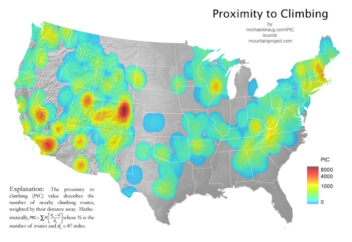
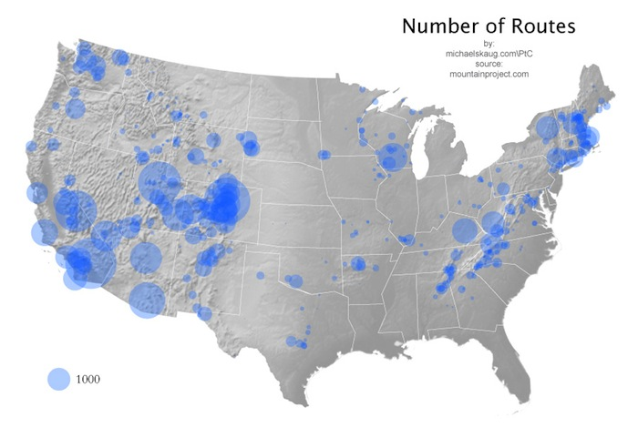

The Distance to Nearest Climbing map was a start, but it treated all climbing areas equally. One obvious difference between climbing areas is the number of routes. The map above shows what I call "Proximity to Climbing", which accounts for the number of nearby climbing routes.
This doesn't say anything about quality of climbing, but that will have to wait until version 3.

For a more direct look at the data, we can visualize the number of routes at each climbing area. Notice the correlation with mountainous areas, particularly over the Appalachian states.